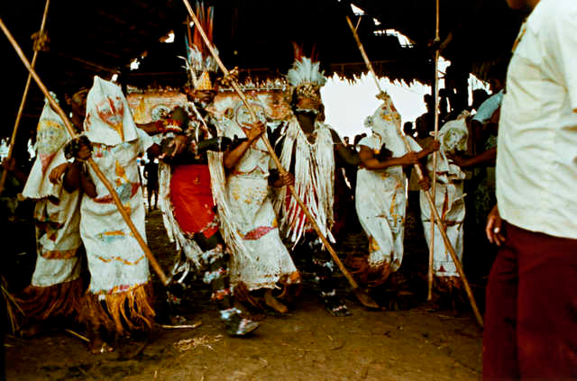

Ticunas
Pertencente à família linguística ticuna, estão localizados na Amazônia, sobretudo às margens do rio Solimões. Eles são considerados o maior grupo indígena que vive na região
Os ticunas (Tikuna, Tukuna ou Magüta) são um povo ameríndio que habita atualmente a fronteira entre o Peru e o Brasil e o Trapézio amazônico na Colômbia. Formam uma sociedade de mais de 50 000 indivíduos, divididos entre Brasil (36 mil), Colômbia (oito mil) e Peru (sete mil), sendo o mais numeroso povo indígena da Amazônia brasileira. A língua ticuna é geralmente classificada como uma língua isolada, entretanto pode estar relacionada à língua yuri, já extinta.

História
De acordo com a história oral relatada pelos próprios ticunas, eles eram índios que habitavam a terra firme e as cabeceiras dos igarapés. Viviam em constante guerra com outros povos e também entre si (guerras entre aldeias ticunas), sempre liderados por um tó-i (chefe militar). Durante esse período, seu principal inimigo era o povo tupi omágua (awane na língua ticuna) que dominava boa parte da várzea e possuía uma supremacia militar em relação aos seus vizinhos. Os omáguas dificultavam seu trânsito nas margens dos grandes rios, limitando-os ao centro das matas e impedindo-os de buscar condições mais favoráveis de sobrevivência na região.
Sua história é marcada por contatos violentos com outros povos ameríndios, seringueiros, madeireiros e pescadores na região do rio Solimões. Os primeiros contatos com os não índios datam do final do século XVII, quando jesuítas espanhóis vindos do Peru, liderados pelo padre Samuel Fritz, começaram a fundar diversos aldeamentos ao longo do rio Solimões, que correspondem aos atuais municípios de São Paulo de Olivença, Amaturá, Fonte Boa e Tefé. Tais aldeamentos eram voltados, principalmente, para os omáguas, que eram muito mais numerosos na época, porém outros povos acabaram sendo incorporados, como os ticunas, miranhas, xumanas, passés e juris (sendo esses três últimos extintos em meados do século XIX). Nesse momento dos aldeamentos, os ticunas puderam ocupar locais da várzea do rio Solimões antes ocupados pelos omáguas.De acordo com registro do padre José de Morais, em 1860, foi somente com a exploração da borracha que os Tikuna, desalojados dos centros das matas pelos caucheiros, passaram a aparecer mais frequentemente nas beiras dos rios.
Na década de 1890, comerciantes vindos do interior do Ceará se estabeleceram na região e criaram diversos seringais, utilizando a mão de obra ticuna. A expropriação fundiária e o controle do trabalho indígena foram realizados por meios violentos, como a caçada aos índios, distribuição das famílias em vários seringais e destruição das malocas. Até meados de 1940, os ticunas ficaram sob o poder dos "patrões" seringalistas, os quais controlavam todas as instituições político-administrativas e religiosas. Tanto os missionários capuchinhos italianos como os delegados do Serviço de Proteção ao Índio eram controlados pelos "patrões" e não tinham nenhum poder para ajudar os ticunas contra a escravização.
Em 1940, o Serviço de Proteção ao Índio começou a agilizar uma ação mais intensiva na região do alto rio Solimões, local onde os ticunas estavam habitando, não só para poder ajudar os grupos indígenas que ali habitavam, mas também para resolver problemas na fronteira com os países vizinhos (como a Questão de Letícia). Em 1942 foi construído um posto indígena em Tabatinga, coordenado pelo inspetor Carlos Pinto Correia, o que diminuiu parte do poder dos seringalistas sobre os indígenas.
A partir da demarcação das terras ticunas, em 1992, vários grupos que viviam em outras terras indígenas se deslocaram para a terra ticuna, motivados pela aproximação com sua história, com os valores de seu povo, com a floresta e a Natureza. Os ticunas criaram aldeias em regiões de igarapés, e afastaram-se dos não-índios e seus bens mercantis. A volta aos igarapés, mais estreitos do que os rios, permitiu ao povo Tikuna fiscalizar melhor a pesca predatória, comum no Solimões e controlada pelos proprietários de grandes barcos pesqueiros.
Normalmente, as aldeias ribeirinhas se dividem em bairros clânicos sob comando moral de um ancião, um modelo adaptado do ambiente endogâmico tradicional do "pai da casa". Os Ticuna realizam rituais xamânicos e praticam a residência uxorilocal, pela qual os novos casais habitam junto à família da esposa.

Terra do Alto
Políticas na terra do alto nos anos 1970 e 1980 estimularam a reunião de comunidades isoladas para obterem benefícios em saúde, educação e alimentação. A maior parte se reuniu em aldeias às margens dos grandes rios. Os ticunas da terra do alto se distribuem em dois conjuntos territoriais. O primeiro fica às margens esquerda e direita do rio Amazonas, no Peru e na Colômbia. O segundo se situa nas bacias dos rios Cotuhué (Colômbia) e Putumayio (Colômbia e Peru). As vilas e comunidades ticunas da terra do alto são garantidas por títulos coletivos e se agrupam em resguardos (Colômbia) e terras concedidas (Peru). Cada aldeia é dotada de um posto de saúde sob responsabilidade dos indígenas. Desde os anos 1960, no Peru, e 1980, na Colômbia, a educação é bilíngue e ministrada por professores ticunas formados.
Movimentos messiânicos
Algumas aldeias foram constituídas sob promessas religiosas. A aldeia peruana de Cushillo Conca surgiu por influência de um missionário evangélico estadunidense, e as colombianas Macedonia (por um visionário indígena) e de Arara (por um padre católico) também seguiram o mesmo caminho. Práticas rituais, cultos religiosos e esportes coletivos foram condenados pelos líderes messiânicos e substituídos por hábitos "brancos". No século XXI, observa-se uma tendência de reintrodução dos costumes tradicionais por demanda dos ticunas e dos brancos em busca da autenticidade étnica daquele povo.
Localização
Os ticunas são encontrados em mais de vinte terras indígenas. Das 59 aldeias ticunas conhecidas em 2002, 42 delas se situam no trecho entre Tabatinga e São Paulo de Olivença, na região próxima à nascente do igarapé Eware, seu local de origem.
Booms econômicos
As políticas sociais dos diferentes Estados, como a oferta de assistência técnica e auxílio material na Colômbia e a seguridade social brasileira aos maiores de 60 anos estimulam a mobilidade dos ticunas, que conheceram numerosos booms econômicos: o corte de madeiras nobres, a coleta de peles de animais silvestres e o turismo comunitário foram algumas das atividades desenvolvidas. Inicialmente envolvidos através do aliciamento de grupos ilegais no transporte ou laboratórios clandestinos nas terras altas, na década de 2000 os ticunas do Peru começaram a cultivar a folha de coca, pois o cultivo é permitido naquele país para consumo medicinal e tribal. Tais atividades ilegais provocaram um clima de confronto com as autoridades nacionais e a prisão de alguns indivíduos, do lado brasileiro, sentindo-se isolados em relação ao aliciamento e à ausência de poderes legais no combate ao uso de narcóticos ilegais, algumas comunidades ticunas organizaram grupos e milícias para combater tais atividades, ações constantemente confrontadas pelos poderes do judiciário brasileiro.